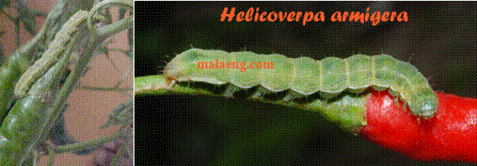

| Home |
| PEST OF CHILLIES |
MAJOR PESTS |
| 1. Chillies thrips |
| 2. Muranai mite/ Broad mite/ yellow mite |
| 3. Tobacco caterpillar |
| 4. Fruit borer |
MINOR PESTS |
| 1. Stem borer |
| 2. Cut worm |
| 3. Green peach aphid |
| Questions |
| Download Notes |
CHILLIES :: MAJOR PEST :: FRUIT BORER
4. Fruit borer: Helicoverpa armigera (Noctuidae: Lepidoptera)
For host range, damage symptoms, bionomics refer cotton
|  |
Management
Follow IPM practices as given for cotton
Spray Fipronil 5 SC 800-1000 ml or Indoxacarb 14.5 SC 335-400 ml or Methomyl 40 SP 50-1125 g or Novaluron 10 EC 375 ml or Spinosad 45 SC 160 ml or Thiodicarb 75 WP 625-1000 g